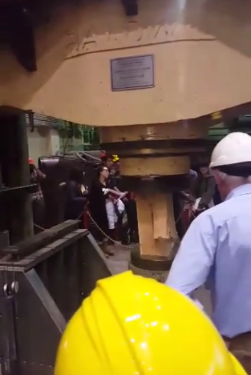
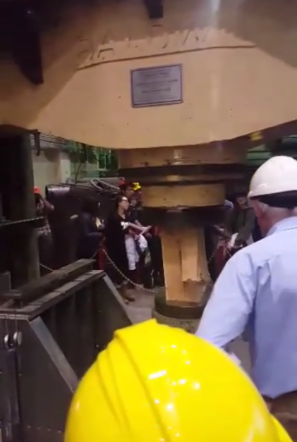
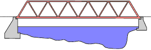
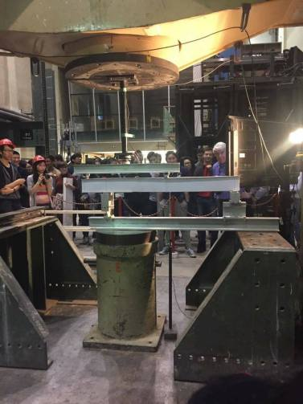

Table of Contents
CIV102 - Structures and Materials
University of Toronto
Instructor: Prof. Michael P. Collins
This course is often regarded as the most challenging course in first-year Engineering Science at University of Toronto, featuring the world-renowned structural engineer, Professor Michael P. Collins. Students are taught concepts that are normally taught in third-year Civil Engineering, and have to complete two bridge design projects through the term.
 

Left: CIV102 Notebook; Right: Professor Michael P. Collins performing a demonstration of crushing a wood block under a hydraulic press
This course integrates concepts with a lot of history on civil engineering. Students were asked to write their class notes in a unique CIV102 Notebook, as shown above.
{kind=link}
Designing a pedestrian truss bridge
In the first bridge design project, teams of students were asked to find an existing pedestrian bridge in the city of Toronto, and propose a replacement truss bridge. The design proposal had to include design of all truss members as well as specifications (such as railings, deck material, etc.). The assignment details are as follows.
My team decided to work on the historic Glen Road Pedestrian Bridge, first built in 1884. The bridge spans the 107 m wide Rosedale Valley Ravine, and rises 20 m above the base of the ravine. The below sketch shows a general overview of the existing bridge.

According to the city of Toronto [1], the bridge is aging and is currently requires large amounts of repair. The city has proposed plans to replace the bridge, but all the plans have to follow these objectives: Address the structural requirements, maintain the cultural heritage value, maintain the existing transportation route, minimize cost, and minimize natural impacts. My team decided that in conjunction with the municipal government of Toronto, the above objectives would be our main design requirements for the replacement bridge.
To go with the most cost-efficient and heritage-appearing design, my team decided to propose a Warren Truss (shown in image below) with all the members equal in length and size. This way, when the same parts are being mass produced, the cost per unit is much lower compared to making custom parts. Using same sized members for the truss would also make it easier to be constructed, thus lowering the cost.
Since spanning the entire width of ~105 m would be more difficult with one main span, we decided to use three spans: two shorter spans of 30 m on each side, and one central span of 45 m, with two sets of piers separating the three spans. Further specifications included diagonal bracing along the top and bottom of the truss, bracing between the piers, steel railings, and a wooden deck. You can read more about our proposed design details here.
Overall, this is my first time using the Praxis engineering design approach in another course other than Praxis. This helps me practice the techniques that I have developed in Praxis, and it shows that the engineering design process is applicable in other design courses. It is a foreshadow of what is to come after Praxis.
Designing and building a matboard bridge
The second bridge project involves designing a beam structure that spans a length of 106 cm, and can support the weight of a model train weighing 400 N (~40 kg). The beam would then be built using matboard and contact cerement with limited resources available. The bridge should support as much weight as possible without any form of failure. The assignment details are as follows.
My team decided to use a two-section design: One half using a double T beam with only a top flange, and the other half using a double I beam with top and bottom flanges. This choice was made so that the material use is minimized.

Some rough design specifications and dimensions of the beam, as well as cutting dimensions of the matboard
Other specifications included the use of diaphragms spaced evenly along the length of the beam to prevent buckling, as well as the double layering of the top deck to support more weight. Theoretically, my team calculated that our design can support up to 1100 N of weight.

A part of my team’s constructed beam with weights on top for pre-stressing after gluing.
The beam was constructed, however, due to limited time and resources, some parts of the bridge was not built exactly according to the plan. So when it came down to testing, the bridge easily passed the train test, but it failed after supporting about half the weight of the expected value.
Failure loading of the matboard bridge using a hydraulic press during final testing
The important lesson that I learned here is that in engineering design, not all prototypes can be constructed exactly according to the design concept. Most of the time, when a design concept is only tested for functionality, a simpler version, or a “proxy”, is often build for that purpose. It is a common practice in engineering design in order to save time and resources. As you will see in Praxis I and Praxis II, there were many times when a “proxy” was built and used for testing instead of an exact replica of the design concept.
Also, I learned that a theoretical design cannot always be replicated exactly. Since errors could occur during construction, it is likely that the performance of the final physical product cannot match what was theoretically predicted.
References
1. Jason Diceman. “Glen Road Pedestrian Bridge EA Study”. City of Toronto. Web. Jun. 2015. Retrieved from: http://www1.toronto.ca/wps/portal/contentonly?vgnextoid=1511960d73a27510VgnVCM10000071d60f89RCRD
Copyright 2018 © Bill Yuan Hong Sun